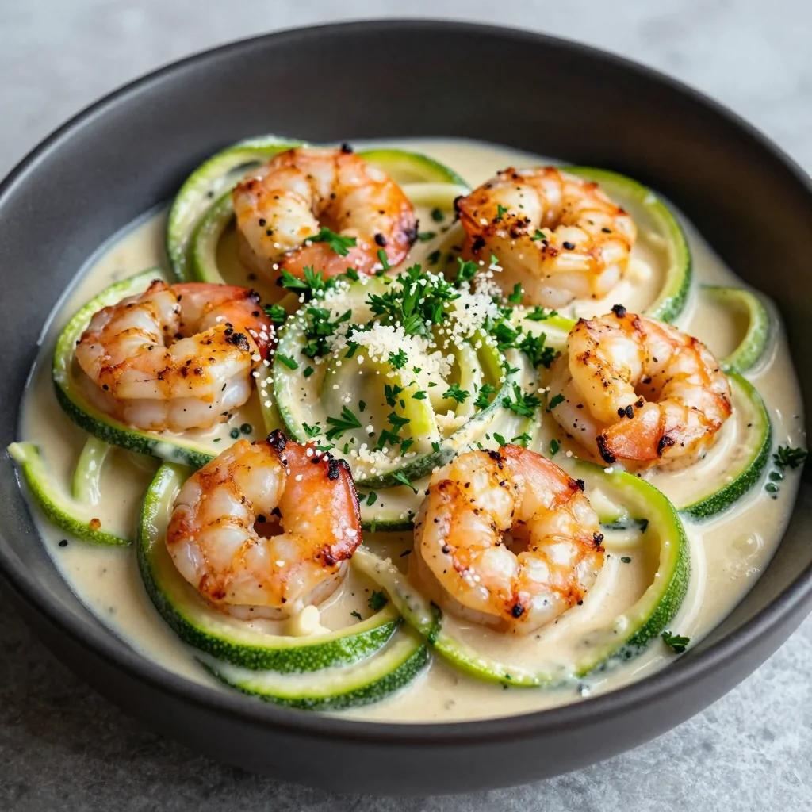

Garlic Shrimp Zucchini Noodles
A light and flavourful meal featuring juicy garlic prawns with zucchini noodles instead of traditional pasta.

Ingredients
- 115 g peeled and deveined prawns
- 1 medium zucchini, spiralised
- 2 garlic cloves, thinly sliced
- 1½ teaspoons olive oil
- ¼ cup cherry tomatoes, halved
- ¼ lemon
- A pinch of chilli flakes
- Salt and pepper to taste
Instructions
- Wash the zucchini and cut it into thin, noodle-like strips using a spiraliser.
- Heat 1 teaspoon olive oil in a frying pan over medium-high heat.
- Add chilli flakes and prawns, then season lightly.
- Cook the prawns for 2-3 minutes.
- Add half the garlic and continue cooking until the prawns are opaque and cooked through.
- Remove the prawns from the pan.
- Add the remaining oil and garlic, then stir in the zucchini noodles.
- Cook for approximately 1-2 minutes.
- Return the prawns to the pan and add the tomatoes.
- Squeeze fresh lemon juice over everything and serve.
Enjoy!